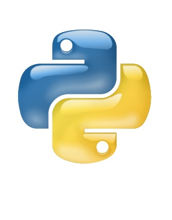

Desarrollo de aplicaciones web
Ciclo Superior
Desarrollar, implantar, y mantener aplicaciones web, con independencia del modelo empleado y utilizando tecnologías específicas, garantizando el acceso a los datos de forma segura y cumpliendo los criterios de accesibilidad, usabilidad y calidad exigidas en los estándares establecidos.

- Lenguajes de marcas y sistemas de gestión de información
- Sistemas informáticos
- Bases de Datos
- Programación
- Acceso a datos
- Entornos de desarrollo
- Desarrollo web en entorno cliente
- Desarrollo web en entorno servidor
- Despliegue de aplicaciones web
- Diseño de interfaces WEB
- Proyecto de desarrollo de aplicaciones web
- Formación y Orientación Laboral
- Empresa e iniciativa emprendedora
- Formación en centros de trabajo (F.C.T)
- Lengua extranjera del entorno profesional: Inglés 1 y 2
Puestos de trabajo más relavantes:
- Programador Web
- Programador multimedia
- Desarrollador de aplicaciones de entornos web